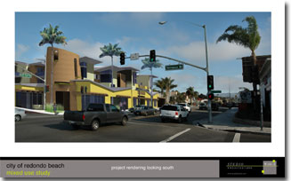

Redondo Beach News
by Mark McDermott
|
 |
Denial comes on heels of vote by council to consider mixed-use development on Torrance Boulevard
It was well past midnight at last Tuesday’s regular meeting when the city council considered the future of Torrance Boulevard.
The council filed a report from the Urban Land Institute outlining options for recreating the street as a “gateway” corridor that included parks, pedestrian-friendly businesses, and mixed-use residential projects. A local architect presented a concept of just what one such project might look like at the southeast corner of Torrance Boulevard and Pacific Coast Highway.
Planning Director Randy Berler said development at that intersection would have a large influence on what else occurs on the boulevard. The four corners of the intersection currently house two gas stations, a bank, and a vacant gas station with a pending development.
“This is definitely a key corner,” Berler told the council. “What happens at this corner will be very important on whether it over time turns into an active pedestrian [area] and successful area. That will occur depending on what type of development the planning commission and council approve...that opportunity could be encouraged or lost depending on what happens.”
Councilman Don Szerlip expressed trepidation at discussing the development at the corner with a project application slated for the planning commission later the same week. “We’ve got the cart before the horse and we can’t help it, because they have every right to come forward with this project,” he said.
Councilman Gerard Bisignano, however, was unequivocal in his support for what he called “the direction” of the mixed-used concepts under discussion. “If you are looking for us to say, hey planning commission, this is a go...then as far as I’m concerned, do it,” he said.
Further into the wee hours, the council approved a series of public workshops beginning Sept. 14 in which a new vision for the rundown boulevard might emerge.
Two nights later, the planning commission considered a proposed CVS drugstore, located on the southeast corner of Torrance Boulevard and Pacific Coast Highway, and followed planning staff’s recommendation, rejecting the drugstore application in 3-1 vote.
The proposed building is 16,613 square feet, largely housing a two-story, 24-hour CVS drugstore with drive-through service, but also including a small snack shop and a pedestrian arcade. In addition to replacing the former gas station, the store would replace two other adjacent businesses – and auto repair shop and a fast food taco drive-through – that in total occupy a little under an acre-and-a-half.
Redondo senior planner Anita Kroeger worked with the developers – the Pacific Planning Group, representing the Zaremba Group, the owners of the property – for the last 18 months in trying to fashion an acceptable project. What emerged, she said, had many desirable features, such as its Mission style architecture. The developers chose, however, not to design a mixed-use residential property that staff had encouraged. And the drive-through nature of the business is subject to a conditional-use permit, meaning the feature is subject to commission approval.
Kroeger said that the project, despite all the negotiations, was still essentially a gussied-up big-box store. “What they’ve done [includes] facade enhancements, pop-outs, arcades, and that that type of thing, but the essential floor plan is still big box,” Kroeger said.
A representative for the Zaremba Group, Karen Blackense, told the commission that she and her company had grown frustrated with the planning staff. She suggested that the staff, in its recommendation to the commission, “was presumptuous in their expectations of your actions,” because it did not include the material necessary to approve the project, only reject it.
“If the planning commission is not given this opportunity, why is a commission necessary?” Blackense asked.
Commissioner Phillip Toomey acknowledged he was “troubled by the nature of the report” and the perception it could give that the decision was already made. “I’m kind of concerned we don’t just do a fire drill,” he said.
A key issues of debate was whether the project conformed to the city’s general plan, which designates the parcels as commercial mixed-use but stops short of requiring mixed-use.
Commissioner Jonathan Eubanks said he couldn’t find grounds to reject the project because in his judgment it conformed to the city’s general plan. He said the plan encouraged but did not mandate mixed-use development with essentially compromised language he described as, “should, could, would like to...kind of do what you want.”
Eubanks said that he liked the direction of the ULI study but couldn’t vote on the basis of it. “I just, on principle, cannot use the criteria of potential future standards and apply them to this project.”
But Chairman Matthew Kilroy said the general plan referred specifically to that intersection, calling for mixed-use design that would help make it a focal point for the city. He said he would vote to hold it to that requirement. “This is too big a project on too important a corner that is spelled out in the general plan,” Kilroy said.
Commissioner Lenore Bloss opposed the project, questioning how it could operate 24 hours when the commission had recently rejected round the clock operation for a new Walgreen’s on PCH. She said the project also needed more work to align itself to the general plan.
But in the end, representatives of both the Zaremba Group and its developer indicated they were done trying to work with the planning department. They indicated they’d prefer a rejection so they could appeal the project to the city council, and that is exactly what they got. The only opposing vote was Toomey.
The issue of Torrance Boulevard now seems likely to become the latest battleground between city planners and a group of activists led by Ellen and Jim Allan, who have opposed new residential development throughout the city.
“I’m looking at this thing,” Ellen Allan told the city council on Tuesday, “Yeah, babe, here is your next Heart of the City. You know, this residential thing you guys all want to cram down our throats, it ain’t going to work, guys. I’m telling you, people have had it…people are sick of it. Mixed use is not the anti-Christ. It is not going to save our city.”
“I’m telling you, this is going to be a gateway to trouble for you all,” she added.
Next: Torrance Blvd. reconsidered. ER
[easyreader home] [easyreader coupons] [hermosawave] [picture of the day] [webcam] [hermosawave internet] [internet radio]